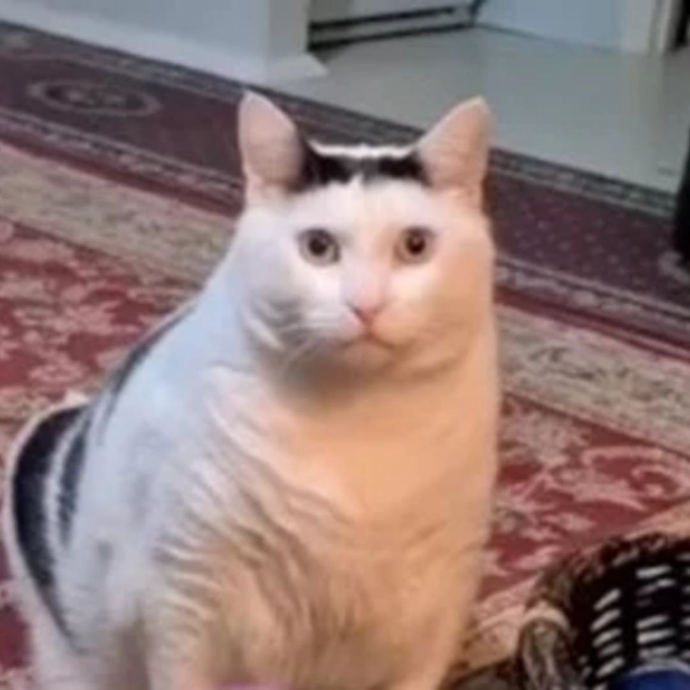
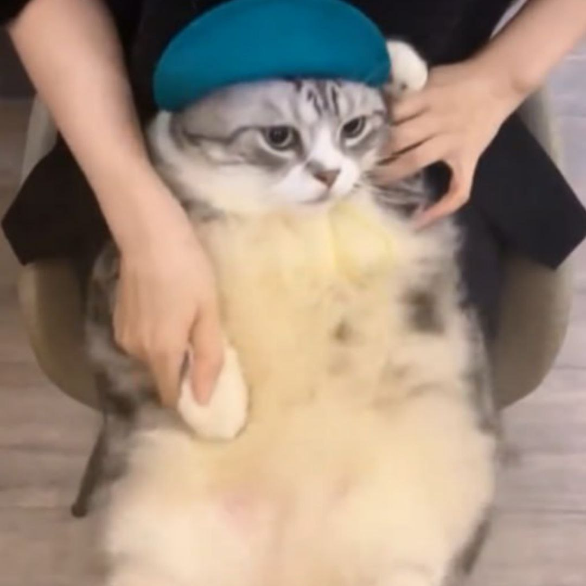
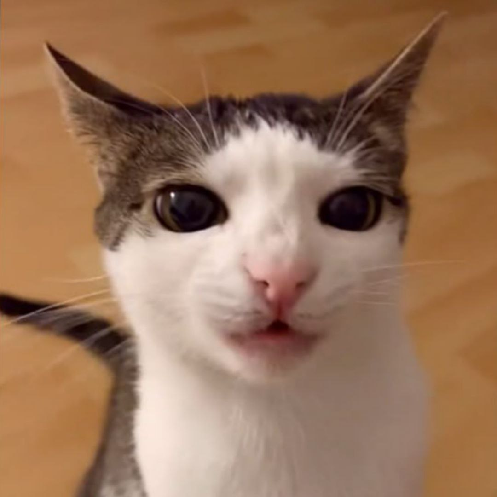
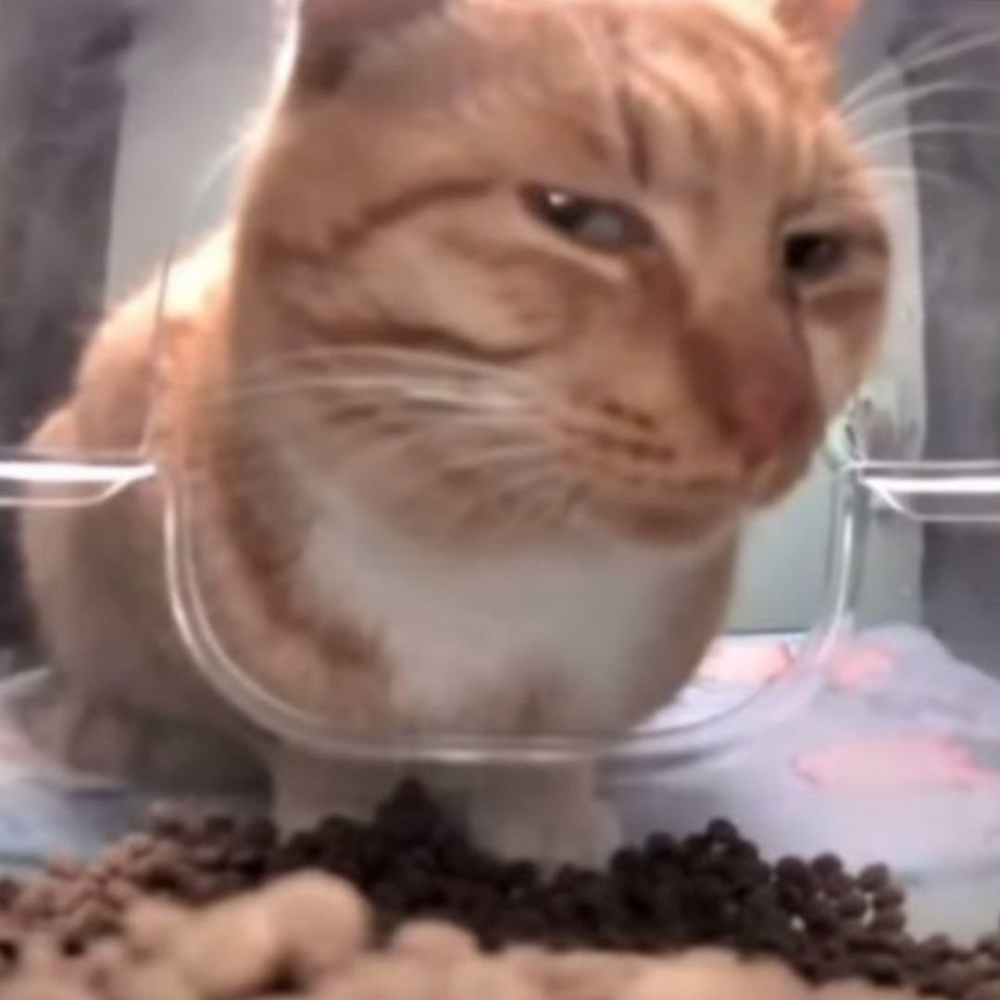
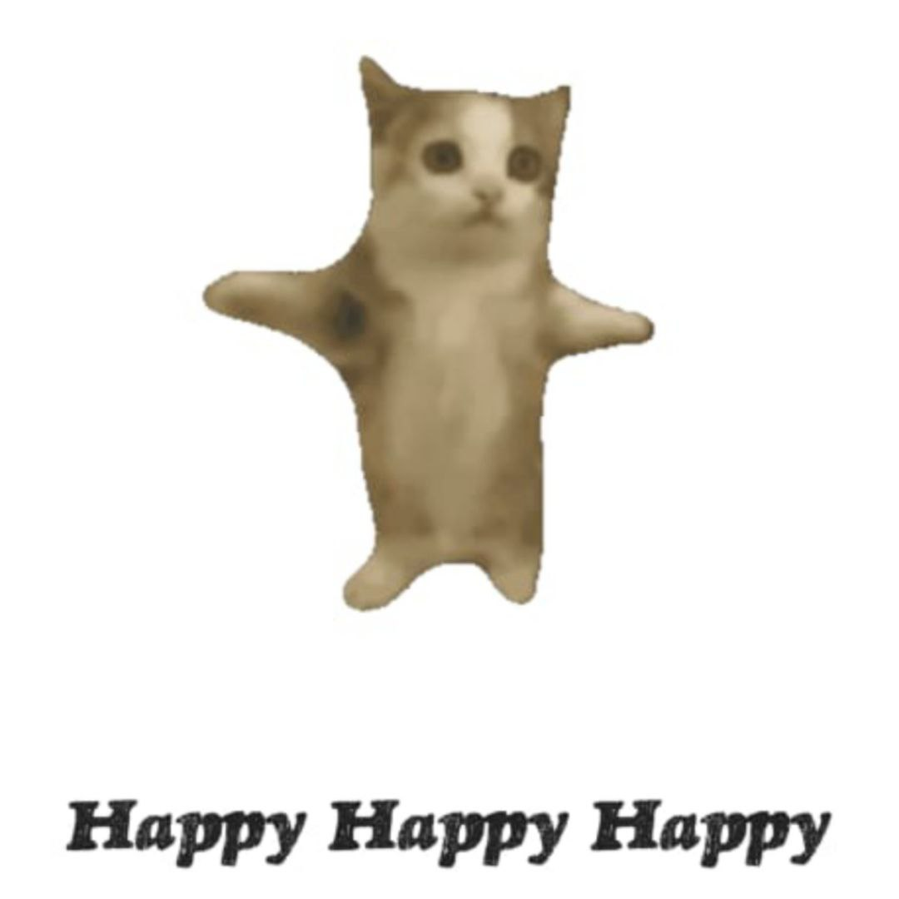

5 мемних котиків
Зміст:
Про сам феномен та вплив ТікТоку5. Huh? Cat
4. Dancing Cat
3. Uranium Cat/Cat Crunching
2. Mr. Fresh/Side Eye Cat
1. Happy Cat
Про сам феномен та вплив ТікТоку
У самому серці інтернет-культури з'явився явище, що змінило панораму соціальних медіа – меми з котиками. Їхні невинні мордочки, милі рухи та безглуздість привернули увагу тисяч користувачів, особливо на платформі TikTok.
Це почалося як невелике явище. Користувачі TikTok, шукаючи щось розважливе та легке, почали створювати короткі відео з котиками. Поширення цих відео швидко виросло завдяки алгоритму платформи, який пропонував їхній контент новим користувачам.З кожним днем кількість фанатів котиків на TikTok зростала, а котикові-меми ставали вже не просто розважальними відео, а справжнім явищем культури.
З появою популярних котиків на TikTok, відбулася справжня революція в способі сприйняття контенту. Користувачі почали обмінюватися котиковими мемами, використовувати їх у власних відео, а навіть створювати спеціальні челленджі та тренди, пов'язані з цим явищем.
Це явище також вплинуло на інші платформи соціальних медіа. Котикові меми стали ще більш популярними в Instagram, Twitter/Х та YouTube. Вони виходять за межі інтернету, з'являючись на футболках, кружках та навіть у телевізійних рекламах.
Отже, популяризація мемів з котиками на TikTok викликала справжню культурну революцію, змінивши спосіб сприйняття розважального контенту і віддзеркалюючи популярність та сили соціальних мереж у формуванні сучасної культури.
5. Huh? Cat
|  | На 5 місці посідає мем з котом Бендером. Huh? Cat — це формат відеомемів, який можна експлуатувати, зображуючи розгубленого або шокованого кота, який видає звук «huh?». Кліп був завантажений у TikTok на початку 2023 року і часто використовується разом із підписами про ситуації, в яких людина почувається розгубленою та збентеженою. Huh? Cat відомий як Бендер, який є домашнім улюбленцем, що належить тіктокерці @planetvenus500[1], яка публікує відео про свого пухкого кота. Відео, використане в мемі, спочатку було опубліковано у вересні 2021 року, але з тих пір було видалено та повторно опубліковано 12 лютого 2023 року, на якому зображено кішку, яка нявкає за їжу, яка отримала понад 2 мільйони переглядів і 332тис. лайків за два місяці. Один із найперших постів із використанням відео кота як мему з'явився в українській спільноті TikTok, як видно в @aromobar публікація від 24 вересня 2021 року, яка додала накладені тексти, щоб відповідати виразу обличчя кота. Відео зібрало понад 2,4 мільйона переглядів і 80тис. лайків за два роки. Відео було опубліковано багато років тому, меми досі актуальні. |
4. Dancing Cat
|  | На 4 місці посідає мем з трендом. «Hey Hey You You» Cat Dancing — це вірусне відео, яке перетворилося на експлуатований шаблон на зеленому екрані, на якому кішка танцює під пісню Авріл Лавін «Girlfriend» за допомогою свого власника. Оригінальне відео було опубліковано на китайській альтернативі TikTok Douyin наприкінці жовтня 2023 року. Починаючи з листопада 2023 року, відео поширилося через вірусний репост у TikTok, отримавши меметичне використання та визнання в західному інтернеті. Був створений шаблон CapCut відео під назвою "Cat Girlfriend", в якому творці мемів вставили кота, що танцює, в різні налаштування, а потім об'єкт позначили його відповідним підписом. 31 жовтня 2023 року Douyin[2] Користувачка @瘦巴巴的胖虎 опублікувала відео, на якому її кіт лежить на спині у неї на колінах. Вона створила вигляд, ніби кіт стоїть на задніх лапах і танцює животом. Відео було покладено на пісню Авріл Лавін «Girlfriend», а саме приспів, який звучить так: «Hey Hey You You». За місяць відео набрало приблизно 3,9 мільйона лайків. І по сьогодні тренд з ним залишається актуальним і продовжує обирати рекордну кількість переглядів. |
3. Uranium Cat/Cat Crunching
|  | На 3 місці посідає мем з кицькою Луною. Cat Crunching, також відомий як Uranium Cat, Cat Crunching відноситься до шаблонних мемів, із зеленим екрану, на якому кішка хрумтить чимось у роті. Оригінальне відео було опубліковано в середині 2022 року, а кішку звуть Луна з облікового запису TikTok Crunchycat Luna[3]. Багато творців мемів у TikTok використовували шаблон CapCut, поєднуючи кота, що хрумтить, з різними підписами про жартівливе поїдання неїстівних предметів, таких як, наприклад, кульки та уран (через котрий і закріпилась назва). Тренд став популярним у жовтні 2023 року. Починаючи з жовтня 2023 року, відео з використанням шаблону ставали все більш вірусними, як і відео з використанням рімейку шаблону, створеного CapCut користувач HuggieFett 4 жовтня 2023 року, який отримав приблизно 148 000 переглядів і 1 300 лайків за 13 днів. Раннє вірусне використання опублікував @rizzbrigitte 5 жовтня 2023 року, посилаючись на те, що він дурний і їсть уран, набрав приблизно 275тис. прослуховувань і 60тис. лайків за 12 днів 6 жовтня @papunk__ опублікував ітерацію-копію, набравши приблизно 9,8 мільйона переглядів і 2,1 мільйона лайків за 11 днів. |
2. Mr. Fresh/Side Eye Cat
|  | На 2 місці посідає мем з помаранчевим котом. Mr. Fresh, також відомий як Side Eye Cat, є помаранчевим котом, який часто з'являється в прямій трансляції Cat Feeder Camera в китайському додатку Hello Street Cat. Кота прозвали Mr. Fresh, тому що він дивиться в камеру і чекає, поки глядач роздасть свіжу їжу. Зображення та GIF-файл, на якому Mr. Fresh дивиться в камеру бічним зором, перетворили його на мем Side Eye Cat, схожий на Side Eye Dog. У січні 2024 року Mr. Fresh та інші коти Cat Feeder Camera Cats, як-от Cat Eat, Then Looking Up та Hedgehog Eating Cat Food, отримали фан-акаунти, меми та перемальовки. 10 жовтня тіктокер @annettesullivan[4] опублікував відео, в якому представив Mr. Fresh, заявивши, що йому дали прізвисько, тому що він їсть лише щойно кинуту їжу. Він буде дивитися на глядача, поки йому не пожертвують більше їжі. За три місяці відео набрало приблизно 1,9 мільйона переглядів і 239тис. лайків. Нагорода Mr. Fresh Bounty відноситься до передбачуваної винагороди, призначеної пану Фрешу в лютому 2024 року китайськими користувачами Telegram, які є частиною групи «катування котів». Новина поширилася західною мережею в Instagram через акаунт @feline_guardians. У свою чергу, багато хто в Китаї доклав зусиль, щоб врятувати пана Фреша. На Заході люди підвищували обізнаність і створювали меми про те, що містер Фреш ухиляється від своєї нагороди. |
1. Happy Cat
|  | На 1 місці посідає мем з веселим котом. Happy Cat – це вірусне відео, на якому кіт стрибає за скляні двері. Вперше з'явившись у 2015 році, версії кліпу з'явилися в TikTok і YouTube, де він був поєднаний зі звуковим ефектом Happy і використовувався в різних редагуваннях і експлойтах, часто в парі з іншими котами. 8 листопада 2015 року, Twitter / X користувач @1Nssu [5] завантажив відео, на якому кошеня схвильовано стрибає за скляні двері, з підписом, який приблизно перекладається як «Зоомагазин, який я часто відвідував, закривається... Хотіла б я забрати його додому». За дев'ять років відео отримало понад 48 600 репостів та 100 000 лайків. 11 листопада 2015 року Imgur [6] користувач Datsun280zxt зробив репост відео та отримав понад 23тис. та 5,5 мільйонів переглядів за два дні після завантаження; Однак згодом відео видалили. 8 березня 2023 року TikTok Користувач @happyhappiihappy завантажив найранішу редакцію кліпу з різними котами. За місяць відео набрало понад 29 500 переглядів . 18 березня 2023 року той самий TikTok користувач завантажив найпопулярніше редагування про кота, який їсть Лао Гань Ма. Відео набрало понад 2,5 мільйона переглядів за три тижні. Відео було опубліковано багато років тому, меми досі актуальні. |